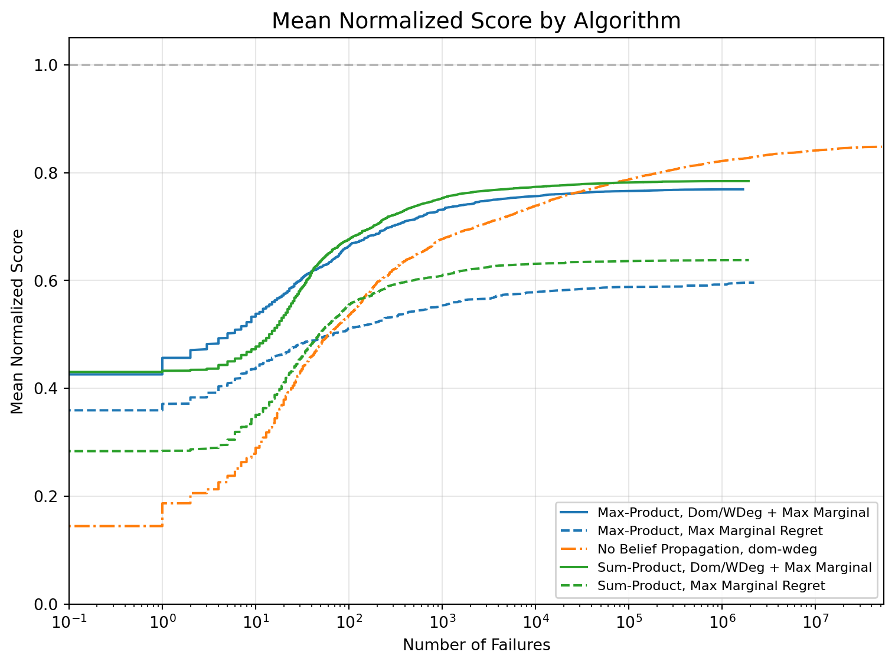
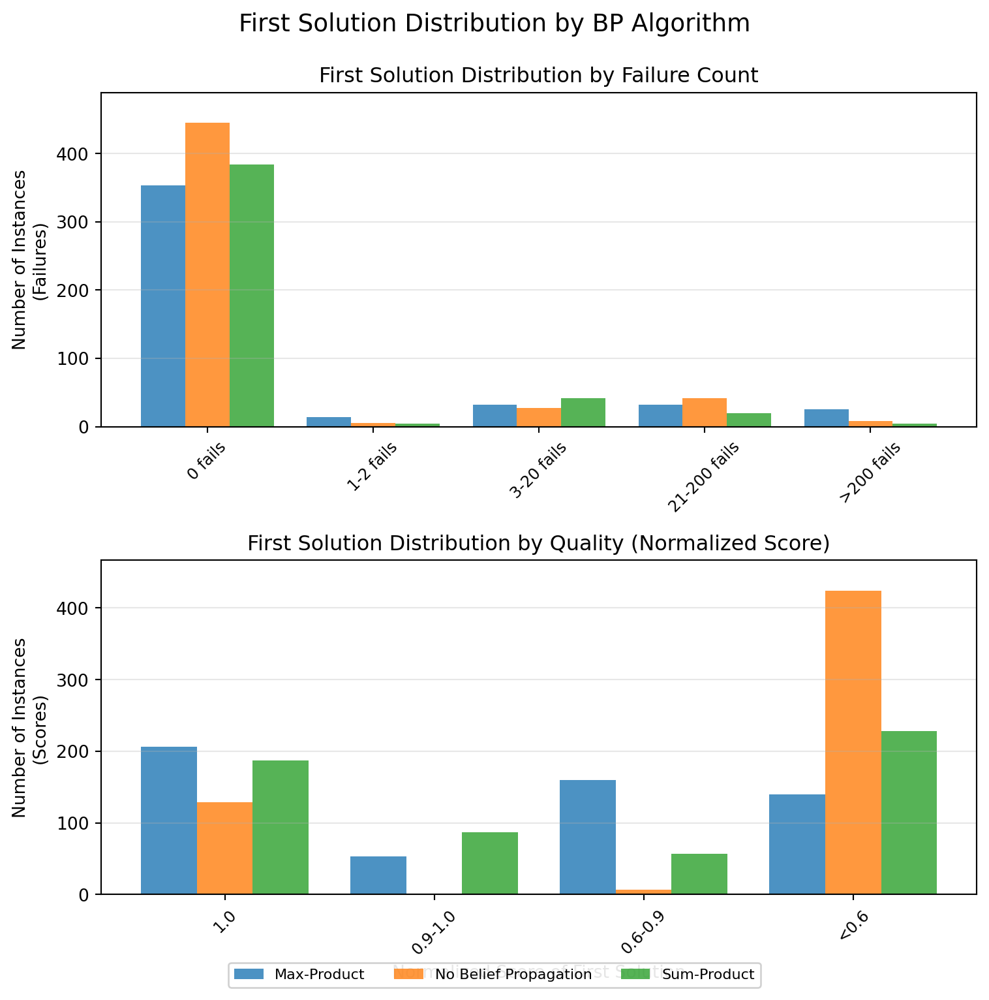
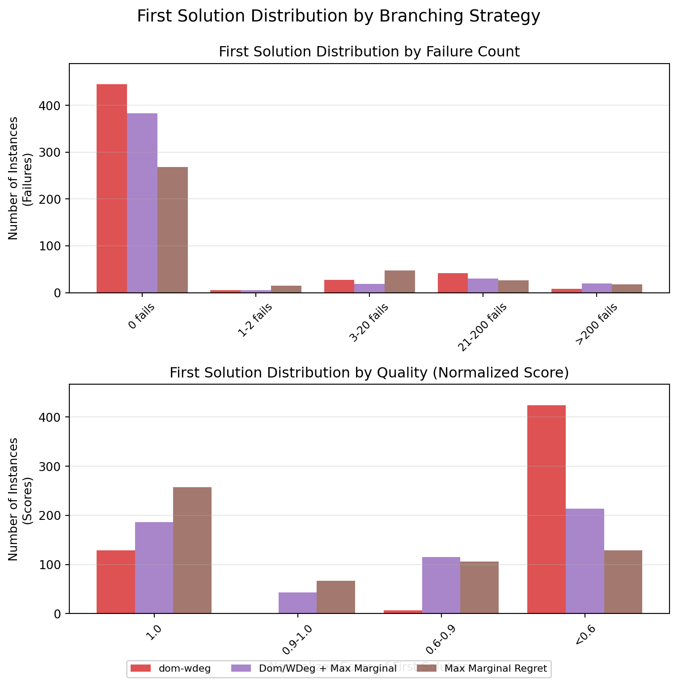
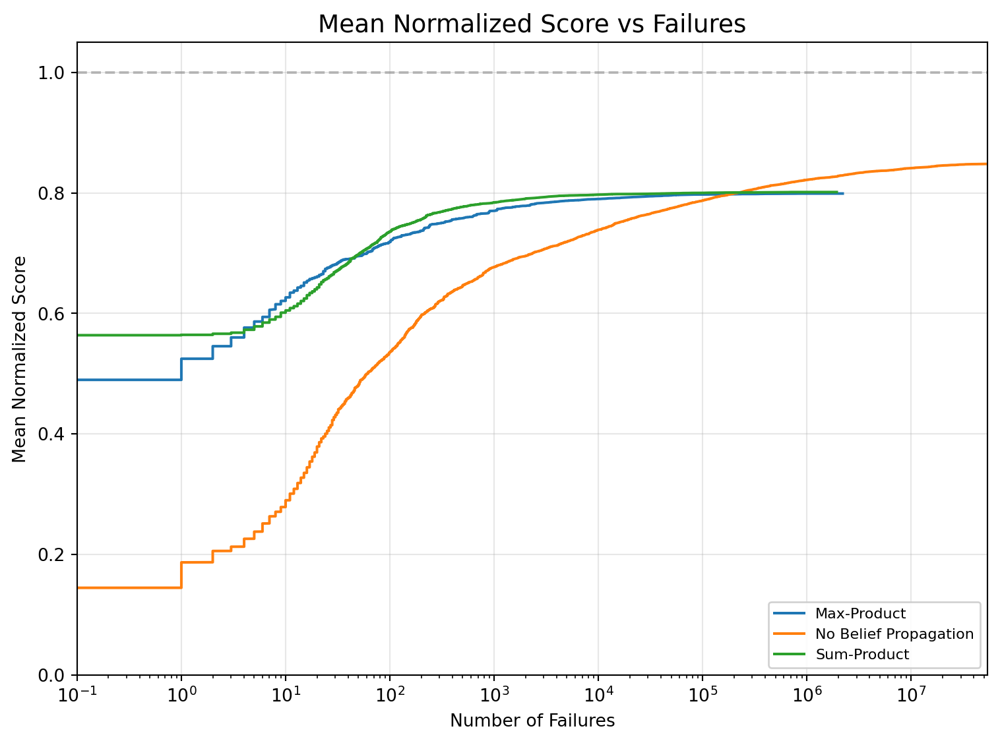
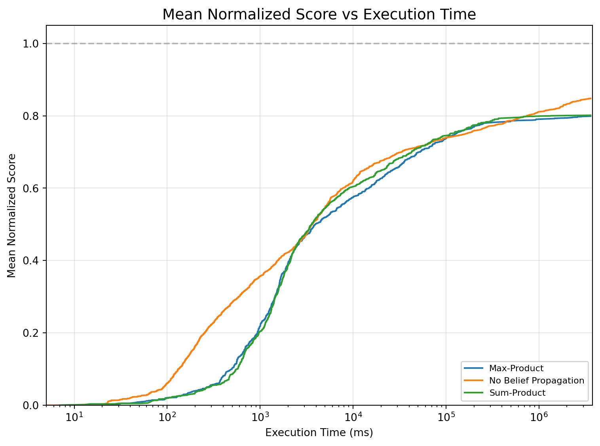
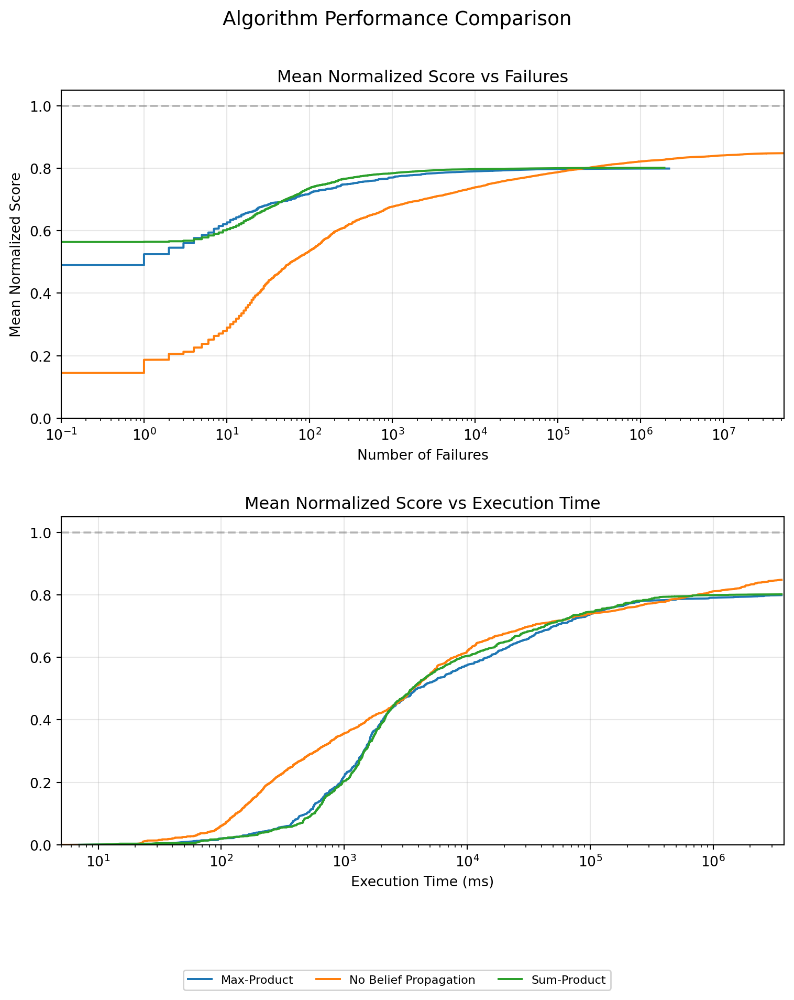
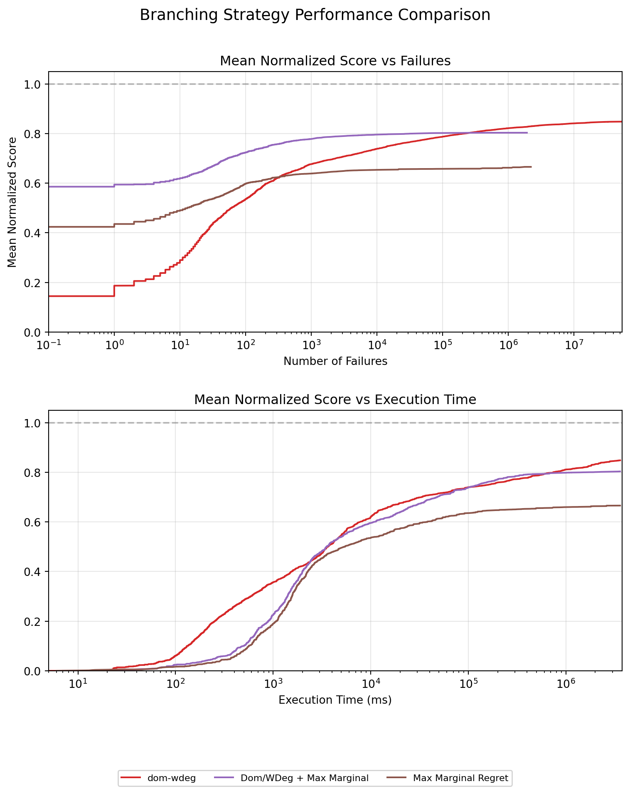

Code
import experiment_api as api
import pandas as pd
# Set logging level
api.set_log_level('INFO')This notebook demonstrates the functionality of the XCSP experiment analysis pipeline. We focus on loading experiment data, grouping by algorithm parameters, and preparing data for visualization.
import experiment_api as api
import pandas as pd
# Set logging level
api.set_log_level('INFO')First, let’s see what problem types are available in our logs directory:
# List available problem types
problem_types = api.get_problem_types("logs")
print(f"Available problem types: {problem_types}")Available problem types: ['knapsack', 'pblogic', 'stilllife', 'stilllife-wastage', 'pbmarket', 'lowautocorrelation', 'tsp', 'pbfrb']Next, let’s load the experiment data for a specific problem type (e.g., knapsack):
# Try to load knapsack logs specifically
knapsack_logs = None
if "knapsack" in problem_types:
print("Loading knapsack experiment logs...")
knapsack_logs = api.load_data("logs/knapsack")
print(f"Loaded {len(knapsack_logs)} knapsack experiment logs")
# Show basic information about the loaded data
if not knapsack_logs.empty:
print("\nColumns in the dataset:")
print(knapsack_logs.columns.tolist())
print("\nSample of knapsack experiment data:")
# Display only a few important columns to keep output concise
display_cols = ["problem_type", "instance", "bp", "branching",
"oracle_weight", "search_type", "best_score",
"total_fails", "num_solutions"]
display_cols = [col for col in display_cols if col in knapsack_logs.columns]
display(knapsack_logs[display_cols].head())
else:
print("No knapsack logs were loaded.")
else:
print("No knapsack logs found in the logs directory.")Loading knapsack experiment logs...
Loaded 400 knapsack experiment logs
Columns in the dataset:
['problem_type', 'instance', 'bp', 'oracle_weight', 'branching', 'search_type', 'status', 'total_fails', 'total_nodes', 'execution_time_ms', 'completed', 'num_solutions', 'best_score', 'first_solution_score', 'first_solution_fails', 'all_solutions']
Sample of knapsack experiment data:| problem_type | instance | bp | branching | oracle_weight | search_type | best_score | total_fails | num_solutions | |
|---|---|---|---|---|---|---|---|---|---|
| 0 | knapsack | Knapsack-30-100-13.xml.lzma | max-product | dom-wdeg-max-marginal | 1.0 | lds | -861 | 1667275 | 1 |
| 1 | knapsack | Knapsack-50-200-01.xml.lzma | sum-product | dom-wdeg-max-marginal | 1.0 | lds | -1297 | 4436337 | 21 |
| 2 | knapsack | Knapsack-40-150-06.xml.lzma | no-bp | dom-wdeg | 0.0 | lds | -741 | 42994254 | 62 |
| 3 | knapsack | Knapsack-40-150-12.xml.lzma | max-product | max-marginal-regret | 1.0 | lds | -954 | 3618786 | 2 |
| 4 | knapsack | Knapsack-60-250-03.xml.lzma | max-product | dom-wdeg-max-marginal | 1.0 | lds | -1358 | 888132 | 2 |
Let’s also try to load all experiment data across all problem types:
# Load all experiment data
all_logs = api.load_data("logs")
print(f"Loaded {len(all_logs)} total experiment logs")
if not all_logs.empty:
# Count logs per problem type
if "problem_type" in all_logs.columns:
problem_counts = all_logs["problem_type"].value_counts()
print("\nLogs per problem type:")
display(problem_counts)Loaded 2800 total experiment logs
Logs per problem type:problem_type
lowautocorrelation 485
stilllife 455
pblogic 420
knapsack 400
tsp 400
stilllife-wastage 240
pbmarket 200
pbfrb 200
Name: count, dtype: int64Let’s test the grouping capability by preparing data for a mean normalized score plot grouped by BP algorithm and branching strategy:
if not all_logs.empty and len(all_logs) > 0:
# Check if we have the required columns
required_cols = ['bp', 'branching']
missing_cols = [col for col in required_cols if col not in all_logs.columns]
if not missing_cols:
print("Testing grouping by BP algorithm and branching strategy...")
# Create a plot with grouping
group_plot = api.plot_mean_normalized_score(
all_logs,
group_by=['bp', 'branching'],
title="Mean Normalized Score by Algorithm"
)
# Display the plot (will show the grouped data info for now)
display(group_plot)
else:
print(f"Cannot test grouping - missing columns: {missing_cols}")
print(f"Available columns: {all_logs.columns.tolist()}")
else:
print("Cannot test grouping - no data available")Testing grouping by BP algorithm and branching strategy...experiment_api - INFO - Creating mean normalized score plot with 5 groups

Now we’ll create histograms showing when first solutions were found and their quality:
if not all_logs.empty and len(all_logs) > 0:
print("Creating first solution histograms...")
# Normalize the data first
normalized_df = api.normalize_data(all_logs)
if "norm_best_score" in normalized_df.columns:
print("Data has been normalized successfully")
# Create histogram grouped by BP algorithm
bp_histogram = api.plot_first_solution_histogram(
normalized_df,
group_by=['bp'],
title="First Solution Distribution by BP Algorithm"
)
# Display the plot
display(bp_histogram)
# Try another grouping if we have branching strategies
if 'branching' in normalized_df.columns:
branching_histogram = api.plot_first_solution_histogram(
normalized_df,
group_by=['branching'],
title="First Solution Distribution by Branching Strategy"
)
display(branching_histogram)
# Save the plot if needed
# api.save_plot(branching_histogram, "branching_histogram.png")
else:
print("Normalization failed, cannot create histogram without normalized scores")
else:
print("Cannot create histogram - no data available")Creating first solution histograms...
Data has been normalized successfullyexperiment_api - INFO - Creating first solution histogram with 3 groups
experiment_api - INFO - Creating first solution histogram with 3 groups


Now let’s examine how the normalized score evolves as the search progresses:
if not all_logs.empty and len(all_logs) > 0:
print("Creating mean normalized score plots...")
# Normalize the data first
normalized_df = api.normalize_data(all_logs)
if "norm_best_score" in normalized_df.columns:
print("Data has been normalized successfully")
# Create plot grouped by BP algorithm
mean_score_plot = api.plot_mean_normalized_score(
normalized_df,
group_by=['bp'],
x_axis_metric=api.METRIC_FAILURES,
log_scale=True,
title="Mean Normalized Score vs Failures"
)
# Display the plot
display(mean_score_plot)
# Try another metric (execution time)
time_plot = api.plot_mean_normalized_score(
normalized_df,
group_by=['bp'],
x_axis_metric=api.METRIC_EXECUTION_TIME,
log_scale=True,
title="Mean Normalized Score vs Execution Time"
)
display(time_plot)
else:
print("Normalization failed, cannot create mean score plot without normalized scores")
else:
print("Cannot create mean score plot - no data available")Creating mean normalized score plots...
Data has been normalized successfullyexperiment_api - INFO - Creating mean normalized score plot with 3 groups
experiment_api - INFO - Creating mean normalized score plot with 3 groups


Finally, let’s create a comprehensive comparison that shows both metrics in a single figure:
if not all_logs.empty and len(all_logs) > 0:
print("Creating comprehensive comparison plot...")
# Normalize the data first
normalized_df = api.normalize_data(all_logs)
if "norm_best_score" in normalized_df.columns:
print("Data has been normalized successfully")
# Create comprehensive comparison grouped by BP algorithm
comparison_plot = api.plot_comprehensive_comparison(
normalized_df,
group_by=['bp'],
title="Algorithm Performance Comparison"
)
# Display the plot
display(comparison_plot)
# Try another grouping if we have branching strategies
if 'branching' in normalized_df.columns:
branching_comparison = api.plot_comprehensive_comparison(
normalized_df,
group_by=['branching'],
title="Branching Strategy Performance Comparison"
)
display(branching_comparison)
# Save the plot if needed
# api.save_plot(branching_comparison, "branching_comparison.png")
else:
print("Normalization failed, cannot create comparison plot without normalized scores")
else:
print("Cannot create comparison plot - no data available")Creating comprehensive comparison plot...
Data has been normalized successfullyexperiment_api - INFO - Creating comprehensive comparison plot with 2 subplots
experiment_api - INFO - Creating comprehensive comparison plot with 2 subplots


We’ve successfully implemented and demonstrated the XCSP experiment analysis pipeline with three main visualization types:
These visualizations provide valuable insights into algorithm performance across different problem types, enabling data-driven decisions about which algorithms and parameters work best for specific scenarios.